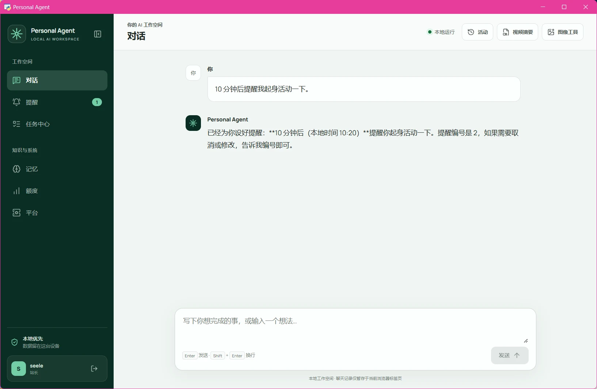
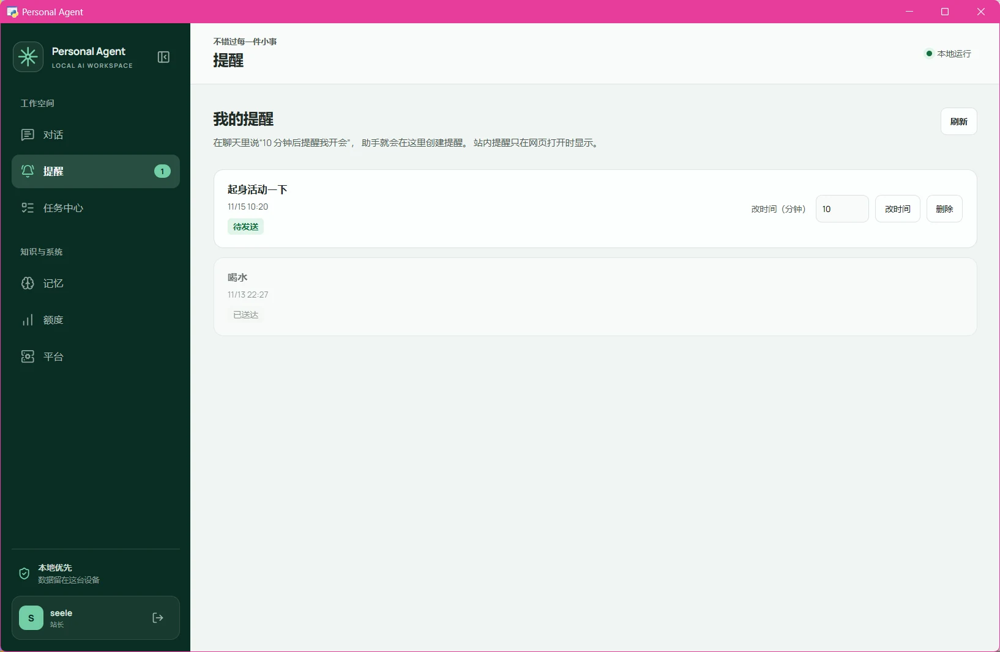
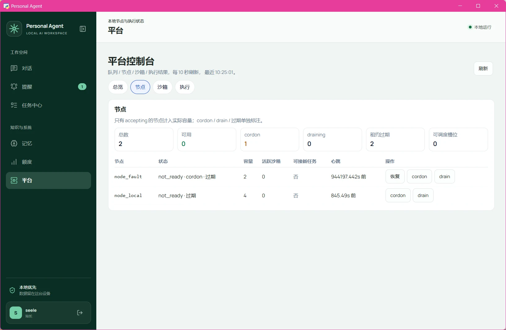
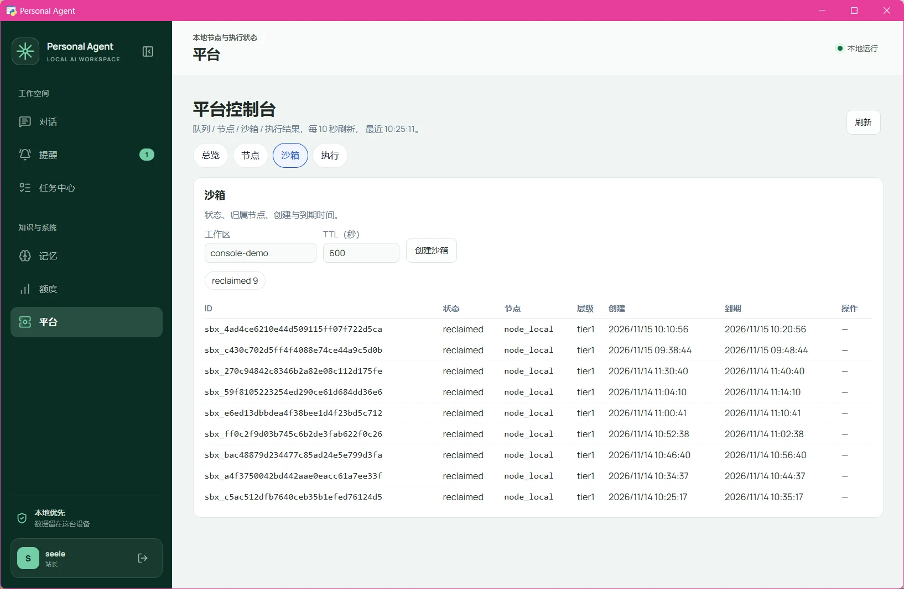
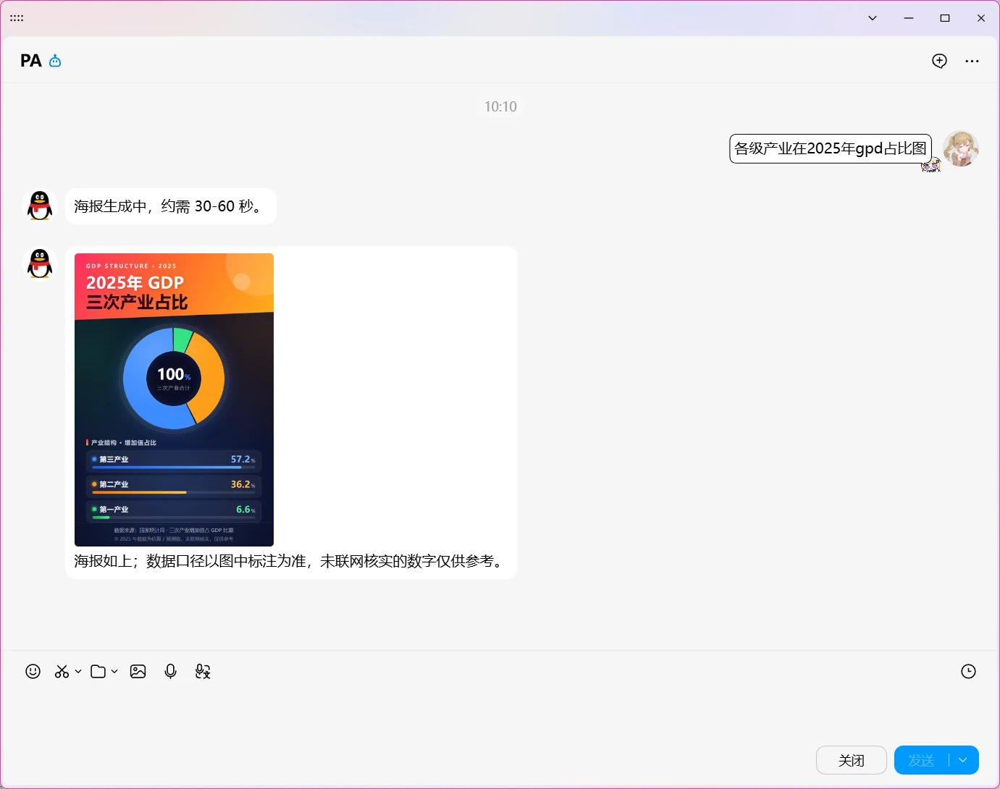
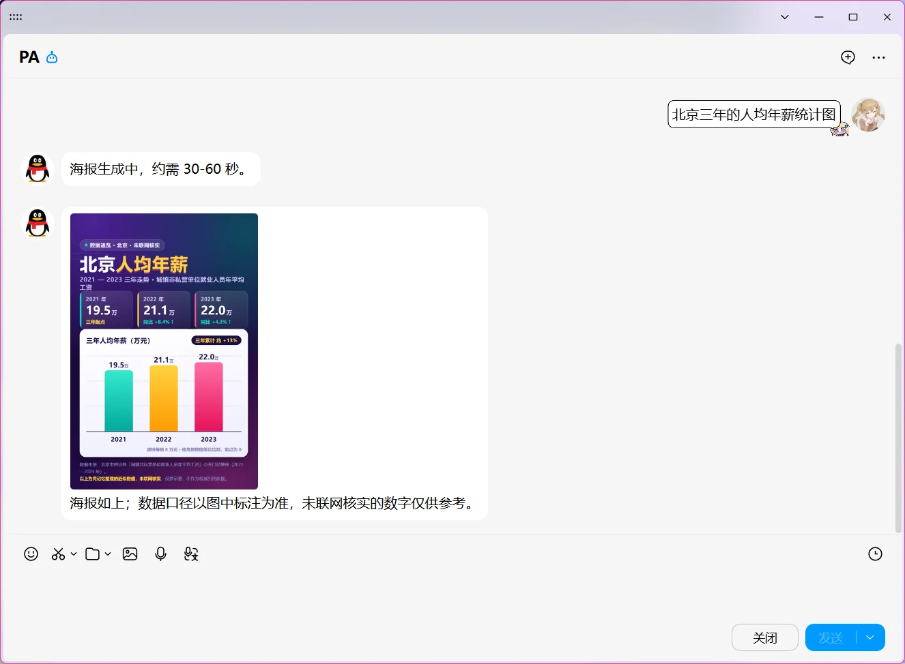
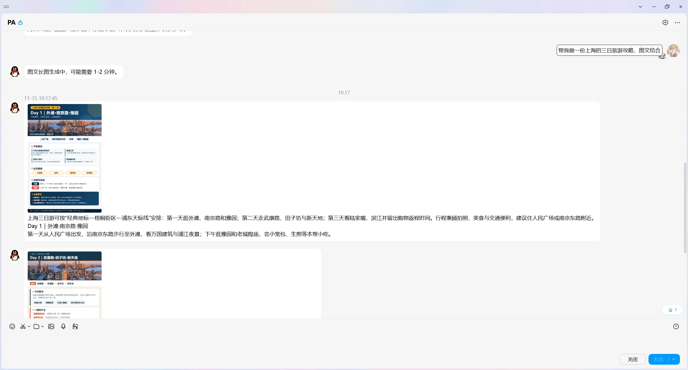
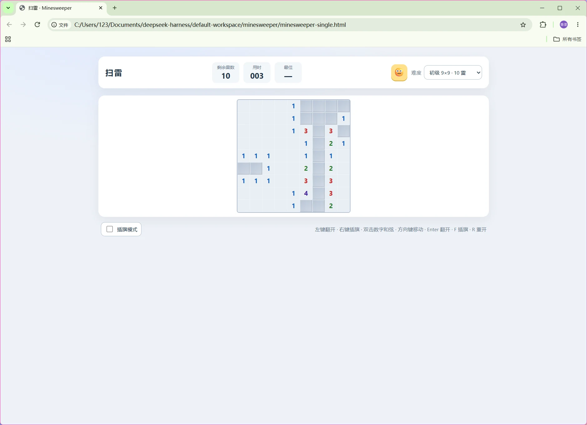

01
桌面工作台
网页端分为对话、提醒、任务、记忆和额度五块。我把常用操作做成独立页面，避免所有信息都堆在聊天记录里。




Unimere（一泓）是一个连接对话、任务、产物与消息的个人智能工作台。React 写界面，FastAPI 和 SQLite 管后端和存储， 数据和记录都留在这台机器上。出门的时候用手机 QQ 发一句话，回来收结果——海报、攻略， 或者一个点开就能玩的 HTML 小游戏。
4.6 万行代码 · 460+ 次提交 · 1300+ 单元测试 · 17 张截图都来自本机实际运行
网页端分为对话、提醒、任务、记忆和额度五块。我把常用操作做成独立页面，避免所有信息都堆在聊天记录里。


这块花的时间比界面多。光是指标口径就改了几轮：哪些状态算进可用容量、取消要不要进成功率分母、 样本不够时显示什么。界面上每个数字都得能解释。


accepting 的节点计入实际容量；cordon、drain 和租约过期会单独标注。

202 表示请求已接收；hold 不等于扩容；可用容量按有效租约计算。
这条线我用得最多：在 QQ 里发需求，本机做完把结果发回来。下面是几次实际运行留下的截图。
一开始是用 NapCat 接小号，隔三差五被腾讯踢下线，早上起来发现机器人又掉了。后来换成 QQ 开放平台的官方机器人， 出站长连，不用公网 IP，也不用一直盯着它掉没掉线。




除了图片，这条通道也用来生成 HTML。下面的扫雷就是一次实际测试。
有一次我直接在 QQ 里让它做一个小游戏。最后返回的是单个 HTML 文件，打开就能玩，32 KB，不需要安装依赖。
这次试了两个模型分工：千问负责前期计划和最后复审，DeepSeek 负责写代码。上面的流程对应这次实际生成过程。

Enter 翻开 + F 插旗 + R 重开。需求从 QQ 发出，成品从 QQ 回传。
这几处是调试时最费劲的。